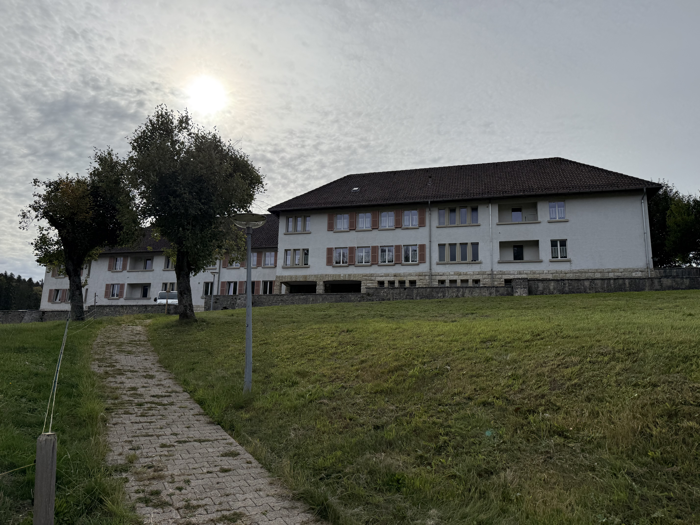

Programmes
Sur place
Disciplines
Tarifs
Patrimoine
Galerie
Contact
Langue
FR
DE
EN
Galerie Photos
Découvrez les espaces, le foyer et les jardins de l'Abbaye de Bellelay.
Abbatiale de Bellelay
Abbatiale de Bellelay
Jardins de l'Abbatiale
Jardins de l'Abbatiale
Jardins de l'Abbatiale
Espace de Luce, extérieur du conventuel
Espace de Luce
Espace de Luce
Espace de Luce

Foyer, extérieur du bâtiment d'hébergement
Foyer, espace détente
Foyer, chambre individuelle
Foyer, chambre multiple
Foyer, cuisine commune
La cafétéria